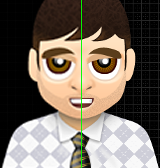

High pixel density display test
This page demonstrates a simple but effective way to handle using "high pixel density" images in your pages. It uses the retinize.js and provides test cases for unit testing on different devices/browsers.
The first column contains reference images. The first row shows a div with background image (sprite technique), the second row shows standard image tags. The images on the right will be displayed at twice the density on supported devices with a high pixel density, such as new iPad, iPhone4, Galaxy S3.
| Low | High |
|---|---|
|
|
|
| For those on regular displays wondering what the fuss is about, here's a preview  |
|
This content will gracefully degrade on un-supported devices, it will not download any extra content. We believe this is the most effective and simple way to handle the issue of retina graphics.
If you find a bug or think something can be improved then why not visit the project page on Github, pull requests and bug reports welcome, alternatively email us on support[at]web-engineer.co.uk.

This work is licensed under a Creative Commons Attribution 3.0 Unported License.